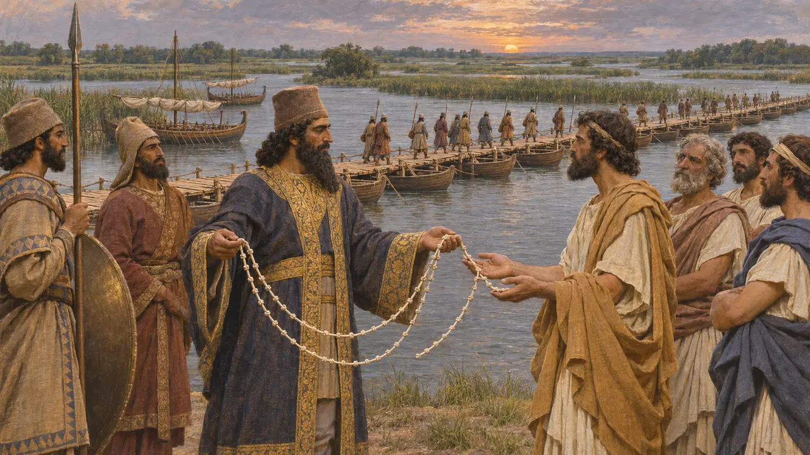
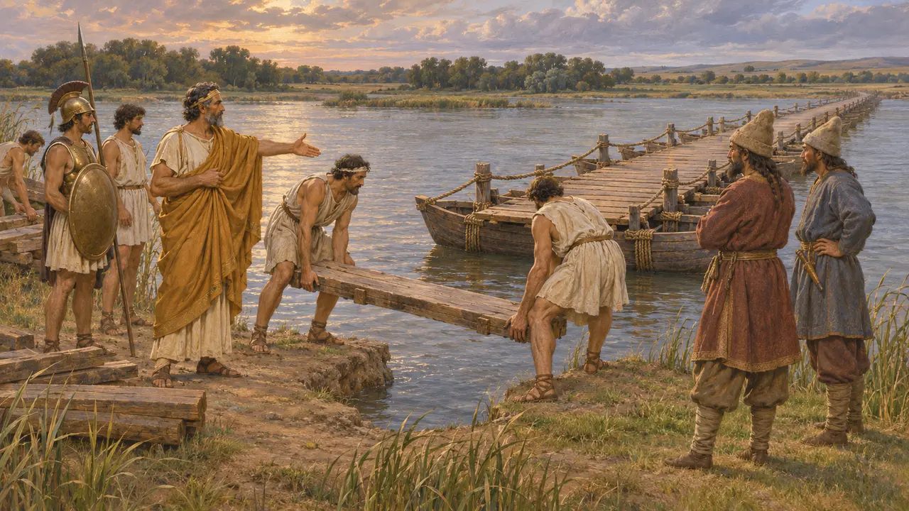
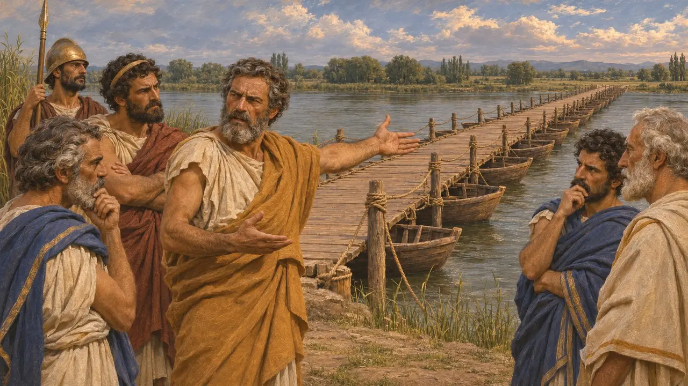
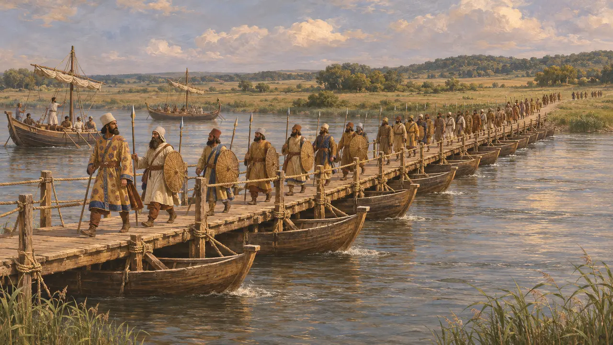

الإستر
الدانوب الأدنى، الذي جُسِّر لحملة داريوس على السكيثيين، نحو 513 ق.م
في اللعبة: المستوى 6: جسر القوارب
الإستر هو الاسم اليوناني للدانوب، نهر أوروبا العظيم. ونحو عام 513 ق.م أقام رعايا داريوس اليونانيون جسرًا من القوارب على مجراه الأدنى ليزحف جيش الملك شمالًا لقتال السكيثيين. ويقول هيرودوت إنه حين ألحّ السكيثيون على الأيونيين أن يهدموا الجسر، دعا هستيايوس الميليتي إلى الإبقاء عليه، فعبره جيش داريوس ناجيًا.
في اللعبة: مرحلة الإستر هي المرحلة السادسة، وتجري نحو عام 513 ق.م. وتتبع ملاحظة الحولية فيها هيرودوت: فقد أقام الأيونيون جسرًا على النهر حيث تتفرّع مصابّه، وحفظ هستيايوس المعبر لداريوس.
نهر أوروبا العظيم
رواية قديمةيصف هيرودوت نهر الإستر بأنه أعظم نهر عرفه. ويقول إنه يجري عبر أوروبا كلها من بلاد الكلت، ويبلغ البحر الأسود عبر عدة مصبّات. ويعدّد كثيرًا من روافده ويقارنه بالنيل. وكان مجراه الأدنى عند اليونانيين يحدّد طرف تراقيا وبداية بلاد السكيثيين في الشمال.
Herodotus 2.33-34; 4.47-50

الجسر الأيوني والحبل المعقود
رواية قديمةيذكر هيرودوت أن أسطولًا من الأيونيين والأيوليين ويونانيي الهلسبونت أبحر يومين صعودًا في النهر من البحر، وأقام عليه جسرًا حيث تتفرّع مصبّاته. وزحف داريوس برًّا من البوسفور وعبر. وكان ينوي أولًا هدم الجسر، لكن كويس الميتيليني أشار عليه بالإبقاء عليه. ثم عقد داريوس ستين عقدة في حبل، وأمر الطغاة اليونانيين أن يحلّوا عقدة كل يوم، وأن يبحروا عائدين إلى ديارهم إن لم يرجع حين تُحلّ العقد كلها.
Herodotus 4.89, 4.97-98

هستيايوس يحرس المعبر
رواية قديمةيروي هيرودوت أن السكيثيين جاؤوا إلى الجسر وحثّوا الأيونيين على هدمه وترك داريوس معزولًا. فاحتجّ هستيايوس الميليتي بأن كل طاغية إنما يحكم مدينته بسند من الملك. فأزال اليونانيون جزءًا قصيرًا عند الضفة الشمالية إرضاءً للسكيثيين. ولما وصل داريوس ليلًا، نادى مصريٌّ جهير الصوت هستيايوس، فأُعيد وصل الجسر.
Herodotus 4.136-141

هل حثّ ملتيادس على هدم الجسر
متنازع عليهينقل هيرودوت أن ملتيادس، الطاغية الأثيني على الخرسونيز، دعا إلى تدمير الجسر. ويشكّ كثير من المؤرخين في ذلك، لأن ملتيادس ظلّ يحكم الخرسونيز تابعًا للفرس حتى عام 493 ق.م. ولعل هذه القصة رُويت في أثينا لمساندته حين حوكم، بعد عودته في تلك السنة، بتهمة الطغيان في الخرسونيز.
Herodotus 4.137; 6.104

كم المسافة، وكم العدد، ولماذا
متنازع عليهلا يصف أي نص فارسي هذه الحملة، وإن كان نقش ضريح داريوس يذكر «الساكا الذين وراء البحر»، ويُفهم ذلك عادةً على أنه يعني سكيثيي أوروبا. ويذكر هيرودوت 700,000 رجل و600 سفينة، وهي أرقام يراها المؤرخون مبالغًا فيها كثيرًا، كما يُشكَّك على نطاق واسع في روايته عن المطاردة الطويلة عبر السهوب. ولا يزال الجدل قائمًا حول التاريخ، الذي يُحدَّد عادةً بنحو سنة 513 ق.م، وحول الغاية: أكانت الانتقام كما يقول هيرودوت، أم السيطرة على تراقيا والبحر الأسود.
Herodotus 4.1, 4.87; DNa; P. Briant, From Cyrus to Alexander, 2002
المصادر
- Herodotus, Histories, book 4
- DNa
- P. Briant, From Cyrus to Alexander, 2002
- A. Fol and N. G. L. Hammond, Persia in Europe, apart from Greece, Cambridge Ancient History IV, 1988